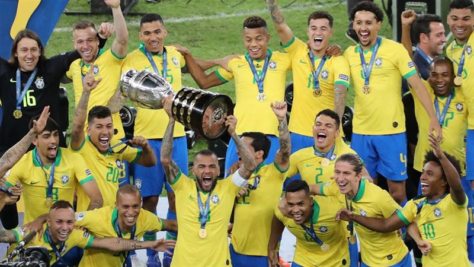

Bohemians 1-1 Chelsea: Late equaliser leaves Frank Lampard waiting for first Blues win
Bohemians trialist Eric Molloy struck a last-gasp equaliser to ensure Frank Lampard's first game in charge of Chelsea ended in a 1-1 draw.
Michy Batshuayi scored the first goal of Lampard's reign in the first half as the Blues looked to get off to a winning start under the former Chelsea midfielder.
But Molloy produced an excellent finish in the 89th minute to leave Lampard waiting for his first win since being appointed head coach at Stamford Bridge.
Before kick-off all eyes were on Lampard's first team sheet and the new Blues head coach opted for a 4-2-3-1 formation.
Copa America: Brazil beat Peru 3-1 to lift the title
Brazil have defeated Peru 3-1 to win their first Copa America title since 2007.
Everton led the team to victory on Sunday, scoring a goal and setting up another to give Brazil their ninth Copa América trophy, and fifth at home.
Gabriel Jesus and Richarlison also scored a goal each for Brazil, who have won the title every time they hosted the tournament.
Everton was named player of the final and also finished as one of the tournament's top scorers with three goals. Brazil's veteran right-back Dani Alves was player of the tournament.
Romelu Lukaku transfer: How much would Manchester United miss Inter Milan target?
Belgian currently with United on pre-season tour of Australia
Inter Milan sporting director Piero Ausilio is in the UK to negotiate a transfer deal for Romelu Lukaku - but how much would Manchester United miss the Belgian?
Inter appointed former Chelsea head coach Antonio Conte in May, with the Italian targeting Lukaku, who himself started his Premier League career with the Blues.
Lukaku fuelled speculation further after expressing a desire to play in Serie A in April, although the United hierarchy have reportedly slapped a £75m price tag on him - to recoup the entire initial fee paid to Everton two years ago.
But would he be missed at United and what could he offer Inter? Here, we take an in-depth look at his stats during his time at Old Trafford...
Frenkie de Jong envisaged Arsenal to Barcelona transfer route
"I have had the following list for a long time: Ajax-Arsenal-Barcelona, call it the Marc Overmars route"
Frenkie de Jong says he thought he would have played for Arsenal before joining Barcelona.
The Netherlands international was presented as a Barcelona player at the Nou Camp last week, after a deal was agreed between Ajax and the La Liga club in January.
De Jong earned the move after a breakthrough season at Ajax, where he was part of a side that won the Eredivisie title and reached the Champions League semi-finals.
Neymar: PSG unhappy after Brazilian fails to return for first day of pre-season

Paris Saint-Germain say they will take “appropriate action” after revealing that Neymar did not return for the first day of pre-season training.
The Brazilian star, who has been linked with a return to Barcelona in recent weeks, missed his country's successful Copa America campaign due to ruptured ankle ligaments.
However, despite his injury, the club have released a statement saying they expected him back on Monday but that he did not return as agreed.
The Toronto Raptors Win Canada's First NBA Championship
The Toronto Raptors became the 2019 NBA champions Thursday, and they are the first team outside the US to do it.
Game 6 of the NBA Finals was tight, going back and forth between the Raptors and the Golden State Warriors. But the Raptors took the game in the end with a 114-110 for a 4-2 series victory.
The match ended the 2019 championship series and was a first-time win for the Raptors, who made their NBA Finals debut in their 24th season.
Kawhi Leonard, the All-Star forward Toronto acquired last summer from San Antonio, was named Finals MVP for the second time. Leonard is the third player to win the award with more than one franchise, along with Kareem Abdul-Jabbar and LeBron James.
Raptors point-guard Kyle Lowry and forward Pascal Siakam put up spectacular performances as well, each with 26 points.
Liverpool Won Champions League VS Tottenham Hotspur

Jurgen Klopp proved his critics wrong when he guided Liverpool to a stunning Champions League triumph last season, according to his agent.
Reds boss Klopp had lost his previous six finals as a manager, including three since his arrival at Anfield in 2015, but finally ended that winless run in emphatic fashion.
And his agent Marc Kosicke believes that the former Borussia Dortmund manager is finally being appreciated now he has tasted his first piece of silverware.